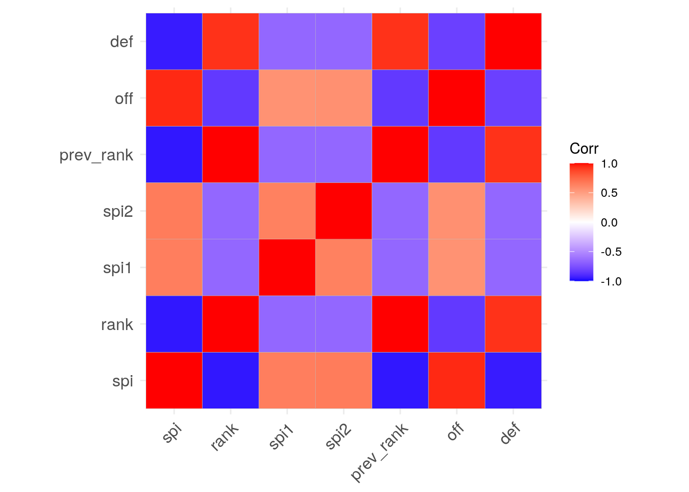
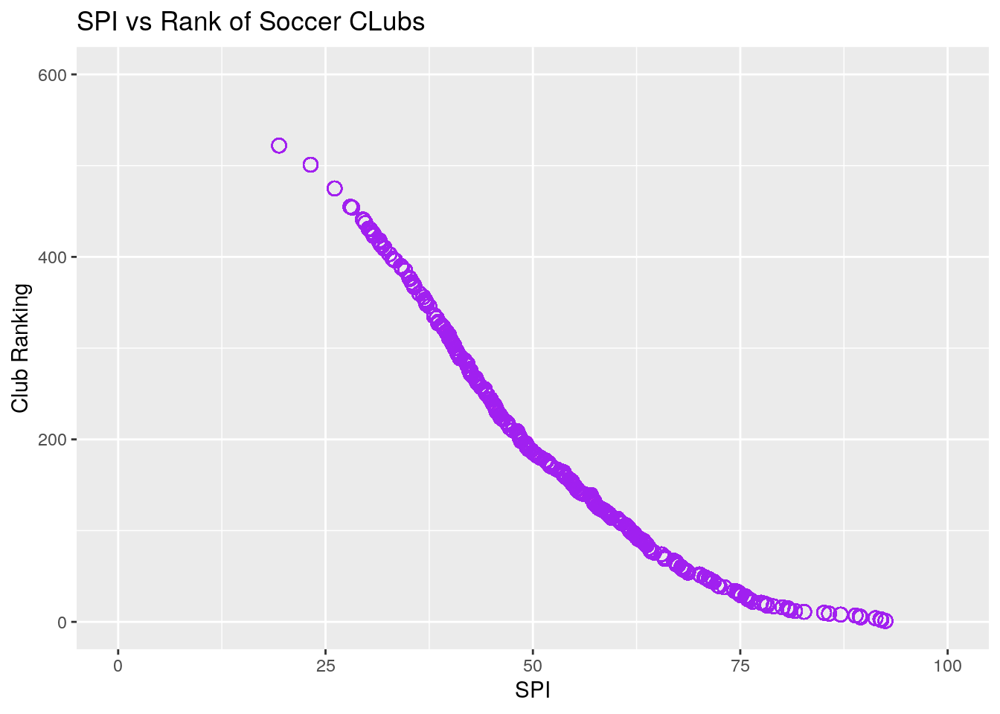
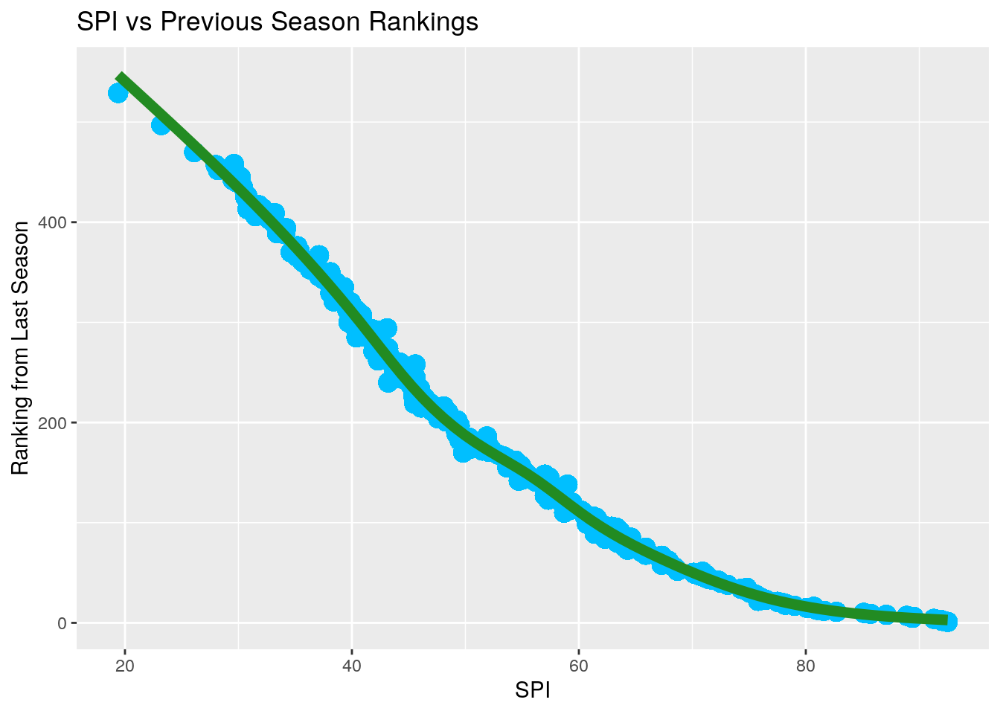
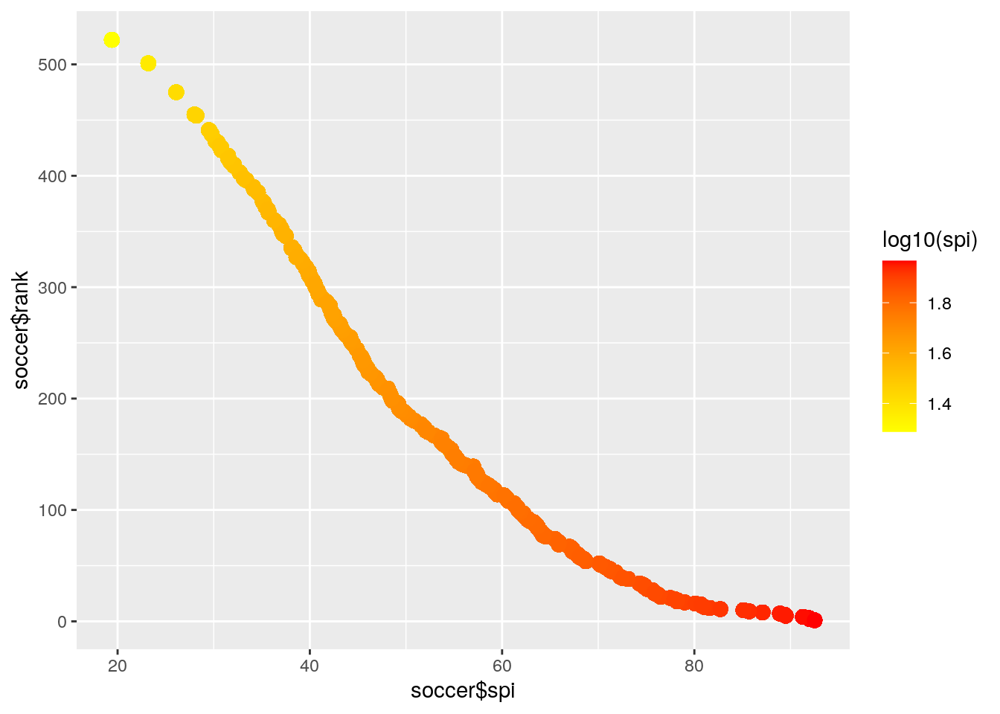
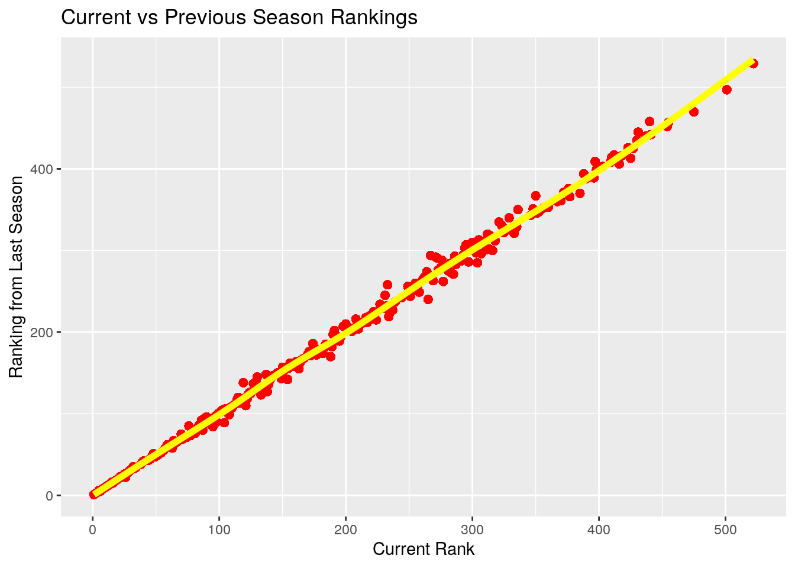
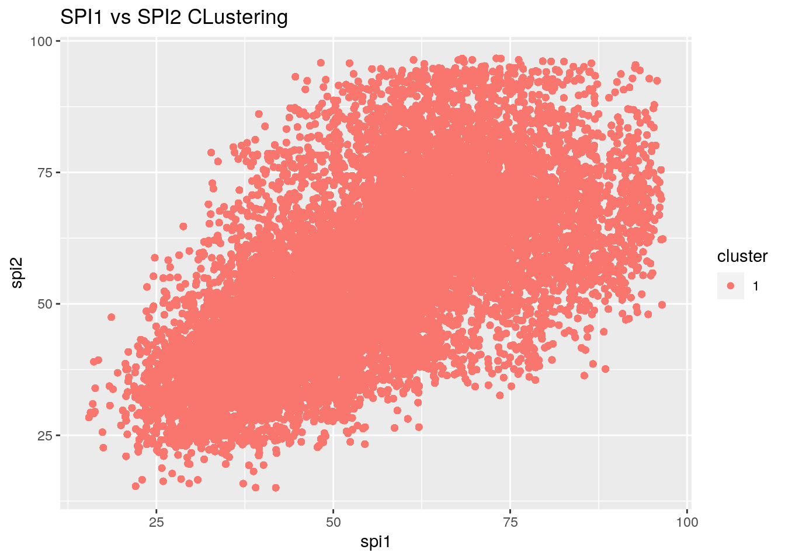

December 2, 2020
R Markdown
This is an R Markdown document. Markdown is a simple formatting syntax for authoring HTML, PDF, and MS Word documents. For more details on using R Markdown see http://rmarkdown.rstudio.com.
When you click the Knit button a document will be generated that includes both content as well as the output of any embedded R code chunks within the document. You can embed an R code chunk like this: #0. Introduction: I chose to do a comparative analysis between two soccer data sets. One data set contains information about rankings of soccer teams within out of all soccer leagues depending on last year's season and the other shows a prediction on which league will win in their respective league as well as Championship European competitions. Variables included are Soccer league, team, offensive score, defensive score, and the overall soccer index (SPI). The SPI was obtained through ESPN while all other factors are based on last year's season statistics. SPI seems like a good predictor of success. I believe that high success in the previous season will show correlation with success this season in their respective leagues. I chose this topic because I follow soccer religiously and enjoy playing as well. I expect those ranked top over all to be most successful in the UCL champions league and Europa League.
1.Tidying: Rearranging Wide/Long
library(tidyverse)
library(tidyr)
library(dplyr)
library(data.table)
library(jtools)
install.packages("fivethirtyeightdata", repos = "https://fivethirtyeightdata.github.io/drat/",
type = "source")
library(fivethirtyeight)
library(fivethirtyeightdata)
spi_global_rankings## # A tibble: 576 x 7
## name league rank prev_rank off def spi
## <chr> <chr> <int> <int> <dbl> <dbl> <dbl>
## 1 Manchester City Barclays Premier League 1 1 2.8 0.2 92.5
## 2 Barcelona Spanish Primera Divisi… 2 2 3.1 0.4 92
## 3 Bayern Munich German Bundesliga 3 3 3.1 0.4 91.9
## 4 Real Madrid Spanish Primera Divisi… 4 4 3.1 0.5 91.3
## 5 Liverpool Barclays Premier League 5 6 2.7 0.4 89.5
## 6 Juventus Italy Serie A 6 5 2.5 0.3 89.4
## 7 Paris Saint-Germain French Ligue 1 7 7 2.8 0.4 88.9
## 8 Atletico Madrid Spanish Primera Divisi… 8 8 2.3 0.3 87.1
## 9 Tottenham Hotspur Barclays Premier League 9 9 2.5 0.5 85.7
## 10 Chelsea Barclays Premier League 10 10 2.4 0.5 85.1
## # … with 566 more rowsspi_matches## # A tibble: 34,109 x 23
## season date league_id league team1 team2 spi1 spi2 prob1 prob2
## <dbl> <date> <dbl> <chr> <chr> <chr> <dbl> <dbl> <dbl> <dbl>
## 1 2016 2016-08-12 1843 Frenc… Bast… Pari… 51.2 85.7 0.0463 0.838
## 2 2016 2016-08-12 1843 Frenc… AS M… Guin… 68.8 56.5 0.571 0.167
## 3 2016 2016-08-13 2411 Barcl… Hull… Leic… 53.6 66.8 0.346 0.362
## 4 2016 2016-08-13 2411 Barcl… Crys… West… 55.2 58.7 0.421 0.294
## 5 2016 2016-08-13 2411 Barcl… Ever… Tott… 68.0 73.2 0.391 0.340
## 6 2016 2016-08-13 2411 Barcl… Midd… Stok… 56.3 60.4 0.438 0.269
## 7 2016 2016-08-13 2411 Barcl… Burn… Swan… 59.0 59.7 0.448 0.266
## 8 2016 2016-08-13 2411 Barcl… Sout… Watf… 69.5 59.3 0.576 0.187
## 9 2016 2016-08-13 1843 Frenc… Bord… St E… 62.0 64.9 0.423 0.276
## 10 2016 2016-08-13 2411 Barcl… Manc… Sund… 86.4 53.6 0.815 0.0525
## # … with 34,099 more rows, and 13 more variables: probtie <dbl>,
## # proj_score1 <dbl>, proj_score2 <dbl>, importance1 <dbl>, importance2 <dbl>,
## # score1 <dbl>, score2 <dbl>, xg1 <dbl>, xg2 <dbl>, nsxg1 <dbl>, nsxg2 <dbl>,
## # adj_score1 <dbl>, adj_score2 <dbl>rankings <- spi_global_rankings
matches <- spi_matches
matches## # A tibble: 34,109 x 23
## season date league_id league team1 team2 spi1 spi2 prob1 prob2
## <dbl> <date> <dbl> <chr> <chr> <chr> <dbl> <dbl> <dbl> <dbl>
## 1 2016 2016-08-12 1843 Frenc… Bast… Pari… 51.2 85.7 0.0463 0.838
## 2 2016 2016-08-12 1843 Frenc… AS M… Guin… 68.8 56.5 0.571 0.167
## 3 2016 2016-08-13 2411 Barcl… Hull… Leic… 53.6 66.8 0.346 0.362
## 4 2016 2016-08-13 2411 Barcl… Crys… West… 55.2 58.7 0.421 0.294
## 5 2016 2016-08-13 2411 Barcl… Ever… Tott… 68.0 73.2 0.391 0.340
## 6 2016 2016-08-13 2411 Barcl… Midd… Stok… 56.3 60.4 0.438 0.269
## 7 2016 2016-08-13 2411 Barcl… Burn… Swan… 59.0 59.7 0.448 0.266
## 8 2016 2016-08-13 2411 Barcl… Sout… Watf… 69.5 59.3 0.576 0.187
## 9 2016 2016-08-13 1843 Frenc… Bord… St E… 62.0 64.9 0.423 0.276
## 10 2016 2016-08-13 2411 Barcl… Manc… Sund… 86.4 53.6 0.815 0.0525
## # … with 34,099 more rows, and 13 more variables: probtie <dbl>,
## # proj_score1 <dbl>, proj_score2 <dbl>, importance1 <dbl>, importance2 <dbl>,
## # score1 <dbl>, score2 <dbl>, xg1 <dbl>, xg2 <dbl>, nsxg1 <dbl>, nsxg2 <dbl>,
## # adj_score1 <dbl>, adj_score2 <dbl>matches %>% spread(key = "league", value = "importance1")## # A tibble: 34,109 x 59
## season date league_id team1 team2 spi1 spi2 prob1 prob2 probtie
## <dbl> <date> <dbl> <chr> <chr> <dbl> <dbl> <dbl> <dbl> <dbl>
## 1 2016 2016-08-12 1843 Bast… Pari… 51.2 85.7 0.0463 0.838 0.116
## 2 2016 2016-08-12 1843 AS M… Guin… 68.8 56.5 0.571 0.167 0.262
## 3 2016 2016-08-13 2411 Hull… Leic… 53.6 66.8 0.346 0.362 0.292
## 4 2016 2016-08-13 2411 Crys… West… 55.2 58.7 0.421 0.294 0.285
## 5 2016 2016-08-13 2411 Ever… Tott… 68.0 73.2 0.391 0.340 0.269
## 6 2016 2016-08-13 2411 Midd… Stok… 56.3 60.4 0.438 0.269 0.293
## 7 2016 2016-08-13 2411 Burn… Swan… 59.0 59.7 0.448 0.266 0.285
## 8 2016 2016-08-13 2411 Sout… Watf… 69.5 59.3 0.576 0.187 0.237
## 9 2016 2016-08-13 1843 Bord… St E… 62.0 64.9 0.423 0.276 0.300
## 10 2016 2016-08-13 2411 Manc… Sund… 86.4 53.6 0.815 0.0525 0.132
## # … with 34,099 more rows, and 49 more variables: proj_score1 <dbl>,
## # proj_score2 <dbl>, importance2 <dbl>, score1 <dbl>, score2 <dbl>,
## # xg1 <dbl>, xg2 <dbl>, nsxg1 <dbl>, nsxg2 <dbl>, adj_score1 <dbl>,
## # adj_score2 <dbl>, `Argentina Primera Division` <dbl>, `Australian
## # A-League` <dbl>, `Austrian T-Mobile Bundesliga` <dbl>, `Barclays Premier
## # League` <dbl>, `Belgian Jupiler League` <dbl>, `Brasileiro Série A` <dbl>,
## # `Chinese Super League` <dbl>, `Danish SAS-Ligaen` <dbl>, `Dutch
## # Eredivisie` <dbl>, `English League Championship` <dbl>, `English League
## # One` <dbl>, `English League Two` <dbl>, `French Ligue 1` <dbl>, `French
## # Ligue 2` <dbl>, `German 2. Bundesliga` <dbl>, `German Bundesliga` <dbl>,
## # `Greek Super League` <dbl>, `Italy Serie A` <dbl>, `Italy Serie B` <dbl>,
## # `Japanese J League` <dbl>, `Major League Soccer` <dbl>, `Mexican Primera
## # Division Torneo Apertura` <dbl>, `Mexican Primera Division Torneo
## # Clausura` <dbl>, `National Women's Soccer League` <dbl>, `Norwegian
## # Tippeligaen` <dbl>, `NWSL Challenge Cup` <dbl>, `Portuguese Liga` <dbl>,
## # `Russian Premier Liga` <dbl>, `Scottish Premiership` <dbl>, `South African
## # ABSA Premier League` <dbl>, `Spanish Primera Division` <dbl>, `Spanish
## # Segunda Division` <dbl>, `Swedish Allsvenskan` <dbl>, `Swiss Raiffeisen
## # Super League` <dbl>, `Turkish Turkcell Super Lig` <dbl>, `UEFA Champions
## # League` <dbl>, `UEFA Europa League` <dbl>, `United Soccer League` <dbl>matches %>% gather(key = "importance1", value = "league") #Untidied here because my data was already neat## # A tibble: 716,289 x 2
## importance1 league
## <chr> <chr>
## 1 season 2016
## 2 season 2016
## 3 season 2016
## 4 season 2016
## 5 season 2016
## 6 season 2016
## 7 season 2016
## 8 season 2016
## 9 season 2016
## 10 season 2016
## # … with 716,279 more rowsrankings## # A tibble: 576 x 7
## name league rank prev_rank off def spi
## <chr> <chr> <int> <int> <dbl> <dbl> <dbl>
## 1 Manchester City Barclays Premier League 1 1 2.8 0.2 92.5
## 2 Barcelona Spanish Primera Divisi… 2 2 3.1 0.4 92
## 3 Bayern Munich German Bundesliga 3 3 3.1 0.4 91.9
## 4 Real Madrid Spanish Primera Divisi… 4 4 3.1 0.5 91.3
## 5 Liverpool Barclays Premier League 5 6 2.7 0.4 89.5
## 6 Juventus Italy Serie A 6 5 2.5 0.3 89.4
## 7 Paris Saint-Germain French Ligue 1 7 7 2.8 0.4 88.9
## 8 Atletico Madrid Spanish Primera Divisi… 8 8 2.3 0.3 87.1
## 9 Tottenham Hotspur Barclays Premier League 9 9 2.5 0.5 85.7
## 10 Chelsea Barclays Premier League 10 10 2.4 0.5 85.1
## # … with 566 more rowsrankings %>% spread(key = "league", value = "rank")## # A tibble: 576 x 36
## name prev_rank off def spi `Argentina Prim… `Australian A-L…
## <chr> <int> <dbl> <dbl> <dbl> <int> <int>
## 1 Manc… 1 2.8 0.2 92.5 NA NA
## 2 Barc… 2 3.1 0.4 92 NA NA
## 3 Baye… 3 3.1 0.4 91.9 NA NA
## 4 Real… 4 3.1 0.5 91.3 NA NA
## 5 Live… 6 2.7 0.4 89.5 NA NA
## 6 Juve… 5 2.5 0.3 89.4 NA NA
## 7 Pari… 7 2.8 0.4 88.9 NA NA
## 8 Atle… 8 2.3 0.3 87.1 NA NA
## 9 Tott… 9 2.5 0.5 85.7 NA NA
## 10 Chel… 10 2.4 0.5 85.1 NA NA
## # … with 566 more rows, and 29 more variables: `Austrian T-Mobile
## # Bundesliga` <int>, `Barclays Premier League` <int>, `Belgian Jupiler
## # League` <int>, `Brasileiro Série A` <int>, `Chinese Super League` <int>,
## # `Danish SAS-Ligaen` <int>, `Dutch Eredivisie` <int>, `English League
## # Championship` <int>, `English League One` <int>, `English League
## # Two` <int>, `French Ligue 1` <int>, `French Ligue 2` <int>, `German 2.
## # Bundesliga` <int>, `German Bundesliga` <int>, `Italy Serie A` <int>,
## # `Japanese J League` <int>, `Major League Soccer` <int>, `Mexican Primera
## # Division Torneo Apertura` <int>, `Norwegian Tippeligaen` <int>, `Portuguese
## # Liga` <int>, `Russian Premier Liga` <int>, `Scottish Premiership` <int>,
## # `South African ABSA Premier League` <int>, `Spanish Primera
## # Division` <int>, `Spanish Segunda Division` <int>, `Swedish
## # Allsvenskan` <int>, `Swiss Raiffeisen Super League` <int>, `Turkish
## # Turkcell Super Lig` <int>, `United Soccer League` <int>rankings %>% gather(key = "rank", value = "league") #Untidied here because my data was already neat## # A tibble: 2,880 x 2
## rank league
## <chr> <chr>
## 1 name Manchester City
## 2 name Barcelona
## 3 name Bayern Munich
## 4 name Real Madrid
## 5 name Liverpool
## 6 name Juventus
## 7 name Paris Saint-Germain
## 8 name Atletico Madrid
## 9 name Tottenham Hotspur
## 10 name Chelsea
## # … with 2,870 more rowsused rankings and matches datasets because they were tidied fine and have the variables I need but I did untidy and retidy. My data looks fine and I will be using spi, spi1, spi1, and rank for my numerical variables.
2. Joining/Merging
left_join(matches, rankings, by = "league")## # A tibble: 605,288 x 29
## season date league_id league team1 team2 spi1 spi2 prob1 prob2
## <dbl> <date> <dbl> <chr> <chr> <chr> <dbl> <dbl> <dbl> <dbl>
## 1 2016 2016-08-12 1843 Frenc… Bast… Pari… 51.2 85.7 0.0463 0.838
## 2 2016 2016-08-12 1843 Frenc… Bast… Pari… 51.2 85.7 0.0463 0.838
## 3 2016 2016-08-12 1843 Frenc… Bast… Pari… 51.2 85.7 0.0463 0.838
## 4 2016 2016-08-12 1843 Frenc… Bast… Pari… 51.2 85.7 0.0463 0.838
## 5 2016 2016-08-12 1843 Frenc… Bast… Pari… 51.2 85.7 0.0463 0.838
## 6 2016 2016-08-12 1843 Frenc… Bast… Pari… 51.2 85.7 0.0463 0.838
## 7 2016 2016-08-12 1843 Frenc… Bast… Pari… 51.2 85.7 0.0463 0.838
## 8 2016 2016-08-12 1843 Frenc… Bast… Pari… 51.2 85.7 0.0463 0.838
## 9 2016 2016-08-12 1843 Frenc… Bast… Pari… 51.2 85.7 0.0463 0.838
## 10 2016 2016-08-12 1843 Frenc… Bast… Pari… 51.2 85.7 0.0463 0.838
## # … with 605,278 more rows, and 19 more variables: probtie <dbl>,
## # proj_score1 <dbl>, proj_score2 <dbl>, importance1 <dbl>, importance2 <dbl>,
## # score1 <dbl>, score2 <dbl>, xg1 <dbl>, xg2 <dbl>, nsxg1 <dbl>, nsxg2 <dbl>,
## # adj_score1 <dbl>, adj_score2 <dbl>, name <chr>, rank <int>,
## # prev_rank <int>, off <dbl>, def <dbl>, spi <dbl>soccer_joined <- left_join(matches, rankings, by = "league")
soccer_joined## # A tibble: 605,288 x 29
## season date league_id league team1 team2 spi1 spi2 prob1 prob2
## <dbl> <date> <dbl> <chr> <chr> <chr> <dbl> <dbl> <dbl> <dbl>
## 1 2016 2016-08-12 1843 Frenc… Bast… Pari… 51.2 85.7 0.0463 0.838
## 2 2016 2016-08-12 1843 Frenc… Bast… Pari… 51.2 85.7 0.0463 0.838
## 3 2016 2016-08-12 1843 Frenc… Bast… Pari… 51.2 85.7 0.0463 0.838
## 4 2016 2016-08-12 1843 Frenc… Bast… Pari… 51.2 85.7 0.0463 0.838
## 5 2016 2016-08-12 1843 Frenc… Bast… Pari… 51.2 85.7 0.0463 0.838
## 6 2016 2016-08-12 1843 Frenc… Bast… Pari… 51.2 85.7 0.0463 0.838
## 7 2016 2016-08-12 1843 Frenc… Bast… Pari… 51.2 85.7 0.0463 0.838
## 8 2016 2016-08-12 1843 Frenc… Bast… Pari… 51.2 85.7 0.0463 0.838
## 9 2016 2016-08-12 1843 Frenc… Bast… Pari… 51.2 85.7 0.0463 0.838
## 10 2016 2016-08-12 1843 Frenc… Bast… Pari… 51.2 85.7 0.0463 0.838
## # … with 605,278 more rows, and 19 more variables: probtie <dbl>,
## # proj_score1 <dbl>, proj_score2 <dbl>, importance1 <dbl>, importance2 <dbl>,
## # score1 <dbl>, score2 <dbl>, xg1 <dbl>, xg2 <dbl>, nsxg1 <dbl>, nsxg2 <dbl>,
## # adj_score1 <dbl>, adj_score2 <dbl>, name <chr>, rank <int>,
## # prev_rank <int>, off <dbl>, def <dbl>, spi <dbl>Here I joined my "matches" dataset with the "rankings" dataset. I joined via the "leagues" variable and I kept the SPI variable as is because that is what I am looking at. I did a left_join without removing any variables because they do not interrupt my data analysis. I chose to do the left_join function because I wanted one tabel that contains its own values along with the common values of the other data set which in this case would be the "league" variable found in both data sets.
Note that the echo = FALSE parameter was added to the code chunk to prevent printing of the R code that generated the plot.
3. Wrangling
library(dplyr)
soccer_spi_omit <- na.omit(soccer_joined$spi)
filter(soccer_joined, spi > 80)## # A tibble: 23,422 x 29
## season date league_id league team1 team2 spi1 spi2 prob1 prob2
## <dbl> <date> <dbl> <chr> <chr> <chr> <dbl> <dbl> <dbl> <dbl>
## 1 2016 2016-08-12 1843 Frenc… Bast… Pari… 51.2 85.7 0.0463 0.838
## 2 2016 2016-08-12 1843 Frenc… AS M… Guin… 68.8 56.5 0.571 0.167
## 3 2016 2016-08-13 2411 Barcl… Hull… Leic… 53.6 66.8 0.346 0.362
## 4 2016 2016-08-13 2411 Barcl… Hull… Leic… 53.6 66.8 0.346 0.362
## 5 2016 2016-08-13 2411 Barcl… Hull… Leic… 53.6 66.8 0.346 0.362
## 6 2016 2016-08-13 2411 Barcl… Hull… Leic… 53.6 66.8 0.346 0.362
## 7 2016 2016-08-13 2411 Barcl… Hull… Leic… 53.6 66.8 0.346 0.362
## 8 2016 2016-08-13 2411 Barcl… Hull… Leic… 53.6 66.8 0.346 0.362
## 9 2016 2016-08-13 2411 Barcl… Crys… West… 55.2 58.7 0.421 0.294
## 10 2016 2016-08-13 2411 Barcl… Crys… West… 55.2 58.7 0.421 0.294
## # … with 23,412 more rows, and 19 more variables: probtie <dbl>,
## # proj_score1 <dbl>, proj_score2 <dbl>, importance1 <dbl>, importance2 <dbl>,
## # score1 <dbl>, score2 <dbl>, xg1 <dbl>, xg2 <dbl>, nsxg1 <dbl>, nsxg2 <dbl>,
## # adj_score1 <dbl>, adj_score2 <dbl>, name <chr>, rank <int>,
## # prev_rank <int>, off <dbl>, def <dbl>, spi <dbl>arrange(soccer_joined, spi)## # A tibble: 605,288 x 29
## season date league_id league team1 team2 spi1 spi2 prob1 prob2
## <dbl> <date> <dbl> <chr> <chr> <chr> <dbl> <dbl> <dbl> <dbl>
## 1 2018 2018-08-04 2414 Engli… Grim… Fore… 6.9 11.1 0.350 0.385
## 2 2018 2018-08-04 2414 Engli… Swin… Macc… 13.2 8.8 0.485 0.26
## 3 2018 2018-08-04 2414 Engli… Nort… Linc… 19.3 15.5 0.463 0.284
## 4 2018 2018-08-04 2414 Engli… Stev… Tran… 10.0 9.82 0.413 0.316
## 5 2018 2018-08-04 2414 Engli… Mans… Newp… 17 8.43 0.555 0.197
## 6 2018 2018-08-04 2414 Engli… Crew… More… 11.8 7.71 0.471 0.259
## 7 2018 2018-08-04 2414 Engli… Bury Yeov… 19.2 8.11 0.608 0.175
## 8 2018 2018-08-04 2414 Engli… Chel… Craw… 9.65 10.9 0.396 0.367
## 9 2018 2018-08-04 2414 Engli… Nott… Colc… 14.4 8.46 0.489 0.236
## 10 2018 2018-08-04 2414 Engli… Exet… Carl… 15.9 12.5 0.450 0.281
## # … with 605,278 more rows, and 19 more variables: probtie <dbl>,
## # proj_score1 <dbl>, proj_score2 <dbl>, importance1 <dbl>, importance2 <dbl>,
## # score1 <dbl>, score2 <dbl>, xg1 <dbl>, xg2 <dbl>, nsxg1 <dbl>, nsxg2 <dbl>,
## # adj_score1 <dbl>, adj_score2 <dbl>, name <chr>, rank <int>,
## # prev_rank <int>, off <dbl>, def <dbl>, spi <dbl>arrange(soccer_joined, desc(spi))## # A tibble: 605,288 x 29
## season date league_id league team1 team2 spi1 spi2 prob1 prob2
## <dbl> <date> <dbl> <chr> <chr> <chr> <dbl> <dbl> <dbl> <dbl>
## 1 2016 2016-08-13 2411 Barcl… Hull… Leic… 53.6 66.8 0.346 0.362
## 2 2016 2016-08-13 2411 Barcl… Crys… West… 55.2 58.7 0.421 0.294
## 3 2016 2016-08-13 2411 Barcl… Ever… Tott… 68.0 73.2 0.391 0.340
## 4 2016 2016-08-13 2411 Barcl… Midd… Stok… 56.3 60.4 0.438 0.269
## 5 2016 2016-08-13 2411 Barcl… Burn… Swan… 59.0 59.7 0.448 0.266
## 6 2016 2016-08-13 2411 Barcl… Sout… Watf… 69.5 59.3 0.576 0.187
## 7 2016 2016-08-13 2411 Barcl… Manc… Sund… 86.4 53.6 0.815 0.0525
## 8 2016 2016-08-14 2411 Barcl… AFC … Manc… 61.6 80.5 0.211 0.546
## 9 2016 2016-08-14 2411 Barcl… Arse… Live… 82.6 77.4 0.555 0.212
## 10 2016 2016-08-15 2411 Barcl… Chel… West… 80.7 63.3 0.691 0.118
## # … with 605,278 more rows, and 19 more variables: probtie <dbl>,
## # proj_score1 <dbl>, proj_score2 <dbl>, importance1 <dbl>, importance2 <dbl>,
## # score1 <dbl>, score2 <dbl>, xg1 <dbl>, xg2 <dbl>, nsxg1 <dbl>, nsxg2 <dbl>,
## # adj_score1 <dbl>, adj_score2 <dbl>, name <chr>, rank <int>,
## # prev_rank <int>, off <dbl>, def <dbl>, spi <dbl>soccer_joined %>% select(league, name, spi, rank)## # A tibble: 605,288 x 4
## league name spi rank
## <chr> <chr> <dbl> <int>
## 1 French Ligue 1 Paris Saint-Germain 88.9 7
## 2 French Ligue 1 Lyon 76.2 24
## 3 French Ligue 1 Marseille 74.8 32
## 4 French Ligue 1 AS Monaco 70.7 49
## 5 French Ligue 1 Nice 63.7 84
## 6 French Ligue 1 Bordeaux 62.3 95
## 7 French Ligue 1 Stade Rennes 61.4 104
## 8 French Ligue 1 St Etienne 61.2 106
## 9 French Ligue 1 Montpellier 60.7 108
## 10 French Ligue 1 Nantes 60.5 110
## # … with 605,278 more rowssoccer_joined %>% mutate(average = (spi1 + spi2)/2)## # A tibble: 605,288 x 30
## season date league_id league team1 team2 spi1 spi2 prob1 prob2
## <dbl> <date> <dbl> <chr> <chr> <chr> <dbl> <dbl> <dbl> <dbl>
## 1 2016 2016-08-12 1843 Frenc… Bast… Pari… 51.2 85.7 0.0463 0.838
## 2 2016 2016-08-12 1843 Frenc… Bast… Pari… 51.2 85.7 0.0463 0.838
## 3 2016 2016-08-12 1843 Frenc… Bast… Pari… 51.2 85.7 0.0463 0.838
## 4 2016 2016-08-12 1843 Frenc… Bast… Pari… 51.2 85.7 0.0463 0.838
## 5 2016 2016-08-12 1843 Frenc… Bast… Pari… 51.2 85.7 0.0463 0.838
## 6 2016 2016-08-12 1843 Frenc… Bast… Pari… 51.2 85.7 0.0463 0.838
## 7 2016 2016-08-12 1843 Frenc… Bast… Pari… 51.2 85.7 0.0463 0.838
## 8 2016 2016-08-12 1843 Frenc… Bast… Pari… 51.2 85.7 0.0463 0.838
## 9 2016 2016-08-12 1843 Frenc… Bast… Pari… 51.2 85.7 0.0463 0.838
## 10 2016 2016-08-12 1843 Frenc… Bast… Pari… 51.2 85.7 0.0463 0.838
## # … with 605,278 more rows, and 20 more variables: probtie <dbl>,
## # proj_score1 <dbl>, proj_score2 <dbl>, importance1 <dbl>, importance2 <dbl>,
## # score1 <dbl>, score2 <dbl>, xg1 <dbl>, xg2 <dbl>, nsxg1 <dbl>, nsxg2 <dbl>,
## # adj_score1 <dbl>, adj_score2 <dbl>, name <chr>, rank <int>,
## # prev_rank <int>, off <dbl>, def <dbl>, spi <dbl>, average <dbl>soccer <- na.omit(soccer_joined)
soccersummary <- summarise(soccer, count = n(), mean(soccer$spi),
sd(soccer$spi), mad(soccer$spi), var(soccer$spi), max(soccer$spi),
min(soccer$spi), median(soccer$spi), first(soccer$spi), last(soccer$spi))
soccersummary## # A tibble: 1 x 10
## count `mean(soccer$sp… `sd(soccer$spi)` `mad(soccer$spi… `var(soccer$spi…
## <int> <dbl> <dbl> <dbl> <dbl>
## 1 276372 56.9 15.4 17.2 237.
## # … with 5 more variables: `max(soccer$spi)` <dbl>, `min(soccer$spi)` <dbl>,
## # `median(soccer$spi)` <dbl>, `first(soccer$spi)` <dbl>,
## # `last(soccer$spi)` <dbl>soccer %>% group_by(league) %>% top_n(14, spi) %>% summarize(mean(spi))## # A tibble: 14 x 2
## league `mean(spi)`
## <chr> <dbl>
## 1 Argentina Primera Division 65.5
## 2 Australian A-League 50
## 3 Barclays Premier League 92.5
## 4 Brasileiro Série A 64.6
## 5 Chinese Super League 64
## 6 English League Championship 64.3
## 7 French Ligue 1 88.9
## 8 German 2. Bundesliga 53.7
## 9 German Bundesliga 91.9
## 10 Italy Serie A 89.4
## 11 Major League Soccer 53.9
## 12 Mexican Primera Division Torneo Apertura 58.7
## 13 Portuguese Liga 80.7
## 14 Spanish Primera Division 92soccer %>% group_by(team1) %>% top_n(300, spi) %>% summarize(mean(spi))## # A tibble: 324 x 2
## team1 `mean(spi)`
## <chr> <dbl>
## 1 1. FC Heidenheim 1846 40.0
## 2 1. FC Kaiserslautern 34.4
## 3 1. FC Magdeburg 34.4
## 4 1. FC Nürnberg 67.3
## 5 1. FC Union Berlin 67.3
## 6 AC Milan 82.2
## 7 Adelaide United 34.9
## 8 AFC Bournemouth 86.9
## 9 Alavés 84.3
## 10 Aldosivi 50.2
## # … with 314 more rowssoccer %>% group_by(rank) %>% top_n(300, spi) %>% summarize(mean(spi))## # A tibble: 271 x 2
## rank `mean(spi)`
## <int> <dbl>
## 1 1 92.5
## 2 2 92
## 3 3 91.9
## 4 4 91.3
## 5 5 89.5
## 6 6 89.4
## 7 7 88.9
## 8 8 87.1
## 9 9 85.7
## 10 10 85.1
## # … with 261 more rowscor(soccer$spi, soccer$rank)## [1] -0.9593863install.packages("corrplot", repos = "http://cran.us.r-project.org")
library("corrplot")
summary(soccer)## season date league_id league
## Min. :2016 Min. :2016-08-12 Min. :1843 Length:276372
## 1st Qu.:2017 1st Qu.:2018-01-26 1st Qu.:1854 Class :character
## Median :2018 Median :2018-10-28 Median :1951 Mode :character
## team1 team2 spi1 spi2
## Length:276372 Length:276372 Min. :15.46 Min. :15.03
## Class :character Class :character 1st Qu.:42.58 1st Qu.:42.49
## Mode :character Mode :character Median :54.64 Median :54.47
## prob1 prob2 probtie proj_score1
## Min. :0.0307 Min. :0.0037 Min. :0.0000 Min. :0.430
## 1st Qu.:0.3650 1st Qu.:0.2021 1st Qu.:0.2355 1st Qu.:1.260
## Median :0.4494 Median :0.2746 Median :0.2626 Median :1.460
## proj_score2 importance1 importance2 score1
## Min. :0.200 Min. : 0.00 Min. : 0.00 Min. : 0.000
## 1st Qu.:0.880 1st Qu.: 9.30 1st Qu.: 9.10 1st Qu.: 1.000
## Median :1.080 Median : 24.70 Median : 23.80 Median : 1.000
## score2 xg1 xg2 nsxg1
## Min. :0.000 Min. :0.000 Min. :0.000 Min. :0.000
## 1st Qu.:0.000 1st Qu.:0.890 1st Qu.:0.620 1st Qu.:0.960
## Median :1.000 Median :1.390 Median :1.040 Median :1.330
## nsxg2 adj_score1 adj_score2 name
## Min. :0.000 Min. :0.000 Min. :0.000 Length:276372
## 1st Qu.:0.730 1st Qu.:1.050 1st Qu.:0.000 Class :character
## Median :1.050 Median :1.050 Median :1.050 Mode :character
## rank prev_rank off def spi
## Min. : 1.0 Min. : 1.0 Min. :0.8 Min. :0.200 Min. :19.40
## 1st Qu.: 62.0 1st Qu.: 62.0 1st Qu.:1.3 1st Qu.:0.800 1st Qu.:44.20
## Median :135.0 Median :137.0 Median :1.6 Median :1.100 Median :57.10
## [ reached getOption("max.print") -- omitted 3 rows ]soccer## # A tibble: 276,372 x 29
## season date league_id league team1 team2 spi1 spi2 prob1 prob2
## <dbl> <date> <dbl> <chr> <chr> <chr> <dbl> <dbl> <dbl> <dbl>
## 1 2016 2016-08-12 1843 Frenc… Bast… Pari… 51.2 85.7 0.0463 0.838
## 2 2016 2016-08-12 1843 Frenc… Bast… Pari… 51.2 85.7 0.0463 0.838
## 3 2016 2016-08-12 1843 Frenc… Bast… Pari… 51.2 85.7 0.0463 0.838
## 4 2016 2016-08-12 1843 Frenc… Bast… Pari… 51.2 85.7 0.0463 0.838
## 5 2016 2016-08-12 1843 Frenc… Bast… Pari… 51.2 85.7 0.0463 0.838
## 6 2016 2016-08-12 1843 Frenc… Bast… Pari… 51.2 85.7 0.0463 0.838
## 7 2016 2016-08-12 1843 Frenc… Bast… Pari… 51.2 85.7 0.0463 0.838
## 8 2016 2016-08-12 1843 Frenc… Bast… Pari… 51.2 85.7 0.0463 0.838
## 9 2016 2016-08-12 1843 Frenc… Bast… Pari… 51.2 85.7 0.0463 0.838
## 10 2016 2016-08-12 1843 Frenc… Bast… Pari… 51.2 85.7 0.0463 0.838
## # … with 276,362 more rows, and 19 more variables: probtie <dbl>,
## # proj_score1 <dbl>, proj_score2 <dbl>, importance1 <dbl>, importance2 <dbl>,
## # score1 <dbl>, score2 <dbl>, xg1 <dbl>, xg2 <dbl>, nsxg1 <dbl>, nsxg2 <dbl>,
## # adj_score1 <dbl>, adj_score2 <dbl>, name <chr>, rank <int>,
## # prev_rank <int>, off <dbl>, def <dbl>, spi <dbl>cor_matrix_soccer <- soccer %>% select(spi, rank, spi1, spi2,
prev_rank, off, def)
cor(cor_matrix_soccer)## spi rank spi1 spi2 prev_rank off
## spi 1.0000000 -0.9593863 0.6545299 0.6557274 -0.9583536 0.9450299
## rank -0.9593863 1.0000000 -0.6637630 -0.6649480 0.9986052 -0.8515368
## spi1 0.6545299 -0.6637630 1.0000000 0.6438244 -0.6629179 0.5643759
## spi2 0.6557274 -0.6649480 0.6438244 1.0000000 -0.6640978 0.5652011
## prev_rank -0.9583536 0.9986052 -0.6629179 -0.6640978 1.0000000 -0.8512087
## off 0.9450299 -0.8515368 0.5643759 0.5652011 -0.8512087 1.0000000
## def -0.9512780 0.9295565 -0.6559451 -0.6575629 0.9279800 -0.8244960
## def
## spi -0.9512780
## rank 0.9295565
## spi1 -0.6559451
## spi2 -0.6575629
## prev_rank 0.9279800
## off -0.8244960
## def 1.0000000Filter: #An SPI greater than 80 has a much higher chance of advancing to top 5 in their respective leagues as well in the UCL or Europe league.
Arrange: A SPI from lowest to least was used here to quantify the lowest ranked teams in the datasets and the least possibility of ranking high in their leagues or in the UCL/Europa Champions league. I also used the descending function as another step that helps identify the highest ranked team with the hughest chance of winnign the leage
Select: Allowed me to view a data set only with columns league, spi, league, and names of the teams.
Mutate: averaged spi1 and spi2 (offense and defense) to see if it averaged to the total spi for the specific team. The higher the spi, the more competitve the team is in placing in their leagues and the champions league.
Summary: Using many different function statsitics to get stats for the spi in the soccer joined data set after removing NA. Here it tells me an overall view of SPI data.
Categorical group_by: I used the top 14 leagues and the top 300 teams to group them in alphabetical order with their SPI scores. I also used rank which seems most useful as it ranked the teams from highest to lowest based on spi (non-categorical).
Problems. Because I did not use all the variables presented and I was focusing mostly on league, team, spi, and rank I did not need the other variables, but they did nit provide any potential problem because they are not really conflicting.
correlation matrix: results shown above closer to positive one is stronger positive correaltion and closer to -1 is stronger negative correlation
4: Visualizing
library(ggplot2)
install.packages("ggcorrplot", repos = "http://cran.us.r-project.org")
library(ggcorrplot)
cor(cor_matrix_soccer)## spi rank spi1 spi2 prev_rank off
## spi 1.0000000 -0.9593863 0.6545299 0.6557274 -0.9583536 0.9450299
## rank -0.9593863 1.0000000 -0.6637630 -0.6649480 0.9986052 -0.8515368
## spi1 0.6545299 -0.6637630 1.0000000 0.6438244 -0.6629179 0.5643759
## spi2 0.6557274 -0.6649480 0.6438244 1.0000000 -0.6640978 0.5652011
## prev_rank -0.9583536 0.9986052 -0.6629179 -0.6640978 1.0000000 -0.8512087
## off 0.9450299 -0.8515368 0.5643759 0.5652011 -0.8512087 1.0000000
## def -0.9512780 0.9295565 -0.6559451 -0.6575629 0.9279800 -0.8244960
## def
## spi -0.9512780
## rank 0.9295565
## spi1 -0.6559451
## spi2 -0.6575629
## prev_rank 0.9279800
## off -0.8244960
## def 1.0000000ggcorrplot(cor(cor_matrix_soccer))
ggplot(cor_matrix_soccer, aes(x = soccer$spi, y = soccer$rank,
)) + ggtitle("SPI vs Rank of Soccer CLubs") + labs(x = "SPI",
y = "Club Ranking") + geom_point(shape = 21, colour = "purple",
size = 3) + scale_x_continuous(lim = c(0, 100)) + scale_y_continuous(lim = c(0,
600))
ggplot(cor_matrix_soccer, aes(x = soccer$spi, y = soccer$prev_rank)) +
ggtitle("SPI vs Previous Season Rankings") + labs(x = "SPI",
y = "Ranking from Last Season") + geom_point(size = 4, colour = "deepskyblue") +
geom_smooth(colour = "forestgreen", size = 2.5)
ggplot(cor_matrix_soccer, aes(soccer$spi, soccer$rank, soccer$prev_rank)) +
geom_point(aes(color = log10(spi)), size = 3) + scale_color_gradient(low = "yellow",
high = "red")
ggplot(cor_matrix_soccer, aes(x = soccer$spi, y = soccer$prev_rank)) +
ggtitle("SPI vs Previous Season Rankings") + labs(x = "SPI",
y = "Ranking from Last Season") + geom_point(size = 4, colour = "deepskyblue") +
stat_smooth(colour = "forestgreen", size = 2.5) ##Same as Line 98 look at this to see just with stat_smooth, sould not find stat='summary'
ggplot(cor_matrix_soccer, aes(x = soccer$rank, y = soccer$prev_rank)) +
ggtitle("Current vs Previous Season Rankings") + labs(x = "Current Rank",
y = "Ranking from Last Season") + geom_point(size = 2, colour = "red") +
geom_smooth(colour = "yellow", size = 2) #I used a geom_point, geom_smooth, and another geom_point with a color gradient. On the first graph I did spi vs rankings while on the secon graph, I did spi vs previous rankings. As we expected from getting correlation, as SPI increased, the rank number decreased (went up in rank). With a -0.9593863, this is an extremely negative correlation so close to one that it is definetly significant and very correlated. I also compared SPI vs prev_rankings. The teams did not change much from last season to this season. We can tell this because the correlation matrix gives the number of -0.9583536 which is extremely close to this season. Therefore, the graph is very similar with an extreme negative correlation between SPI and previous rankings. I was curious about a graph between current rank vs previous rank, so I plotted that as well, and ofcourse they are almost positive 1 (0.9986052), because it has not changed much so the relationship between previous rank and current rank are linear and significant. My heat plot I used here also used to see the correlation between all my numeric variables.
5 Dimensionality Reduction
set.seed(348)
kmeans1 <- cor_matrix_soccer %>% kmeans(1)
kmeans1## K-means clustering with 1 clusters of sizes 276372
##
## Cluster means:
## spi rank spi1 spi2 prev_rank off def
## 1 56.92504 162.8244 55.29957 55.19019 162.8152 1.599838 1.073214
##
## Clustering vector:
## [1] 1 1 1 1 1 1 1 1 1 1 1 1 1 1 1 1 1 1 1 1 1 1 1 1 1 1 1 1 1 1 1 1 1 1 1 1 1
## [38] 1 1 1 1 1 1 1 1 1 1 1 1 1 1 1 1 1 1 1 1 1 1 1 1 1 1 1 1 1 1 1 1 1 1 1 1 1
## [75] 1 1 1 1 1 1 1 1 1 1 1 1 1 1 1 1 1 1 1 1 1 1 1 1 1 1
## [ reached getOption("max.print") -- omitted 276272 entries ]
##
## Within cluster sum of squares by cluster:
## [1] 8349930578
## (between_SS / total_SS = 0.0 %)
##
## Available components:
##
## [1] "cluster" "centers" "totss" "withinss" "tot.withinss"
## [6] "betweenss" "size" "iter" "ifault"kmeansclust <- cor_matrix_soccer %>% mutate(cluster = as.factor(kmeans1$cluster))
kmeansclust %>% ggplot(aes(spi1, spi2, color = cluster)) + geom_point() +
ggtitle("SPI1 vs SPI2 CLustering") #I tried to use the PAM clustering function here, however my data was too large for PAM. instead I used kmean and it worked perfectly. I then ggplot and did a cluster betwene spi1 and spi2 (offensive and defensive SPI) and found out that the cluster was just one big cluster as I expected since they are relatively similar.